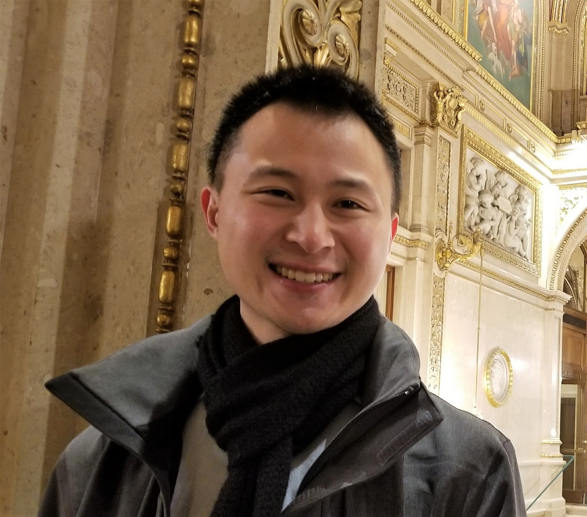

|  |
Kelvin Fongkelvin.fong@yale.edu follow me on GitHubGates Hall 440 (Systems Lab)
Cornell University
Ithaca, NY 14853
|
I am a third year PhD student at Cornell University in the Department of Computer Science, a member of the Initiative for Cryptocurrencies & Contracts, and the grateful recipient of a 2017 NDSEG Fellowship. My research focuses on designing secure systems and building tools to ease their development. I am advised by Andrew Myers and Ari Juels.
I received my bachelors degree in Mathematics – Computer Science from Brown University in May 2012 where I worked with Shriram Krishnamurthi on WeScheme, a web-based development environment for Racket. After graduating, I spent three years as a software engineer at TripAdvisor working on major backend data import and infrastructure systems.
In my spare time I like to play Ultimate Frisbee, play board, card, and table-top games, and go for hikes.